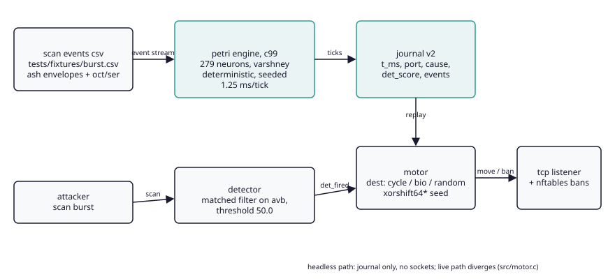
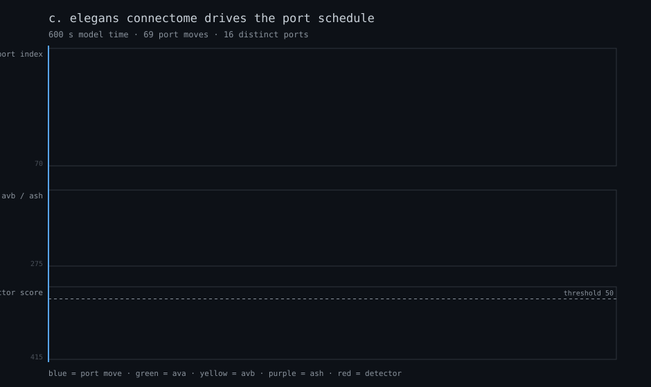
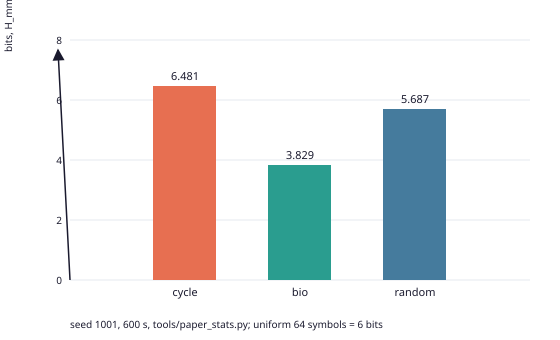
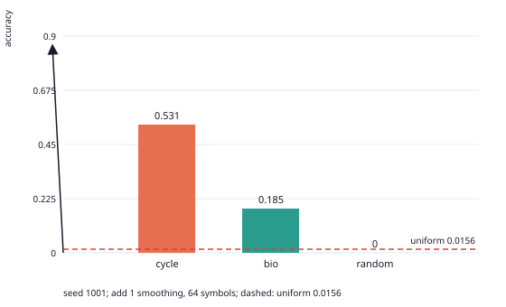
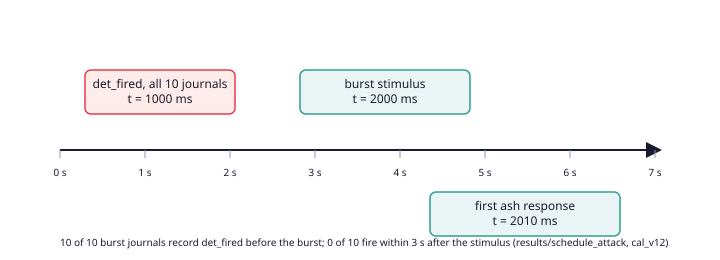

графики svg без внешних зависимостей, tools/render_figures.py






замкнутая сетевая защита, расписание которой читается из смоделированной нервной системы C. elegans. детерминированный headless планировщик tcp портов: тик задают рефлекс скорости тела и детектор, метку задаёт рукописный readout коннектома. научный выход: каталог опровержений с трассируемыми числами.
четыре ещё выигрываемых утверждения и эксперименты к ним: docs/PLAN_V11.md.





полный текст: методы, статистика, honesty check с отзывами. 15.4 тыс. слов, 358 числовых токенов, все трассируются гейтом.
читать FINAL.mdреферат по ГОСТ 7.32-2017, ключевые слова, те же методы и результаты. числовые множества идентичны английской версии, проверяет tools/check_paper_parity.py.
читать FINAL_RU.mdресёрч с источниками: docs/RESEARCH_V3.md; история проекта в коммитах: docs/HISTORY.md; заявление об использовании ИИ: paper/AI_ASSISTANCE.md.